레이더 개발 이야기 (16) - 마침내, Cavity Magnetron!
게시: 2023-01-12T06:30:11+09:00
<잠깐, 지상 레이더는 어떻게 하는 거야?> 여러가지 꼼수로 버텨보긴 했지만, 영국 공군 레이더 개발팀은 결국 당시 진공관의 한계를 극복하지 못하는 이상 제대로 된 공대공 레이더는 불가능하다고 결론. 당시 진공관은 미터 단위의 파장을 가진 장파 밖에 만들어내지 못했는데, 그로 인해 비교적 작아야 하는 항공기 탑재용 레이더에서는 전파에 방향성을 주는 것이 불가능했고, 그 때문에 지표면에 부딪혀 되돌아오는 반사파 등의 온갖 난제를 극복할 방법이 없었음. 하지만 생각해보면 영국 공군의 Chain Home 레이더만 하더라도 (비록 앞면 뒷면 정도의 방향성 밖에 없었으나) 일부 방향성을 주긴 했었음. 이건 대체 어떻게 가능했을까? 핵심은 야기-우다 안테나(Yagi-Uda Antenna)의 원리. 야기-우다 안테나는 전기 신호를 받아들여 전파를 생성하는 활성 요소(driven element) 앞 뒤에 여러 개의 비활성 요소를 설치함으로써 장파에게도 어느 정도 방향성을 줄 수 있었던 발명품.
야기 안테나는 1926년 일본 토호쿠 제국 대학의 우다 교수가 발명했고 야기 교수는 약간 도왔을 뿐이었는데, 미국에 특허 출원을 할 때는 야기 교수의 이름으로 냈기 때문에 보통은 야기 안테나라고 알려짐. 그나마 정작 일본에서는 그 중요성을 전혀 인식하지 못해 사장된 기술. 나중에 WW2 초기 싱가폴 함락 때 일본군은 영국군 레이더 매뉴얼을 노획하고 그 안에서 yagi antenna라는 단어를 보고도 이게 일본식 이름 Yagi라는 것을 전혀 눈치채지 못했고, 나중에 영국군 레이더 조작병을 생포하여 취조해본 뒤에야 야기가 일본인 과학자라는 것을 알았다고. 야기 안테나 기술의 핵심은 가로 활대처럼 보이는 안테나들 중 긴 쪽의 끝에서 두번째 활대만 활성 안테나이고, 활성 요소 뒤쪽의 가장 긴비활성 활대는 reflector 역할을 한다는 것. 나머지 비활성 안테나들은 방향성을 좀 더 잡아주는 director 역할 (그림1).
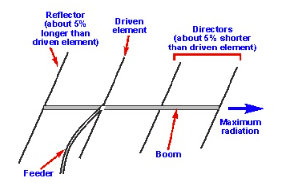
영국 공군의 Chain Home 레이더도 철탑 사이에 가로로 걸쳐진 각각의 활성 안테나 바로 뒤 0.18 파장 뒤에 reflector를 설치하여 약 100도 정도의 각도로 방향성을 주었던 것 (그림2, 그림에는 reflector가 표시되지 않음).
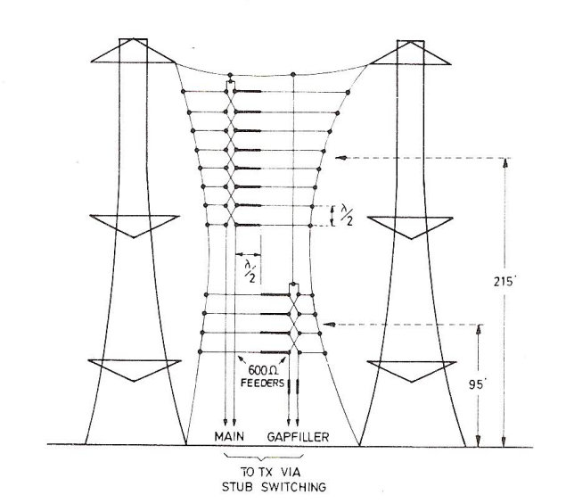
항공기에도 이런 것을 쓰면 안 되나? 됨. 그러나 그렇게 방향성을 주기 위해서는 안테나 크기가 엄청나게 커지거나 방향성을 좁은 각도로 유지할 수 없었기 때문에 여전히 제한적. 그림 3의 독일공군 야간 전투기 Bf-110의 사슴뿔형 안테나도 야기 안테나의 원리를 이용한 것. 당연히 레이더 성능도 떨어지지만 항공기의 비행 성능 자체가 떨어질 수 밖에 없음.
<큰 팀은 망하고 작은 팀이 성공한다> 별의별 꼼수에도 불구하고 한계가 명확하자, 결국 영국 공군 레이더 개발팀은 1939년 중반 새로운 진공관 개발이 핵심이라는 것에 동의하고 버밍엄 대학의 Mark Oliphant 교수에게 개발을 위임. 올리펀트 교수는 연구진을 2인 1조의 여러개 팀으로 나누고 각 팀이 각자 나름대로의 아이디어로 새로운 진공관 개발을 하도록 함. 올리펀트 교수가 연구팀을 2인 1조로 나눈 것은 여러 명으로 큰 팀을 꾸릴 경우, 기발한 아이디어를 내기 어렵다고 생각했기 때문. 완전히 새로운 물건을 만들려면 많은 실패가 있을 수 밖에 없는데, 큰 팀을 꾸미면 그 팀원 여러 명이 아이디어를 낼 때 실패를 두려워하여 안전한 아이디어에만 집착할 가능성이 컸음. 그런 팀들 중 하나인 John Randall 교수와 그의 대학원생 조교 Harry Boot의 연구 과정이 올리펀트 교수의 판단이 옳았음을 입증. 사제 지간인 이들은 거리낌없이 이런저런 연구를 시도해보다 다 실패. 그러나 누가 누굴 비난하고 비웃을 처지가 아니었던 이들은 기존 시도들을 결국 다 포기하고 마음을 비운 뒤, 여유를 가지고 그냥 기존에 나왔던 과학 저널들을 읽어보며 심기일전하기로 함. 거기서 잭팟이 터짐. 아래 사진은 버밍엄 대학 물리학부 건물인 Poynting Physics Building에 붙어 있는 랜들과 부트의 업적을 가리는 명판.
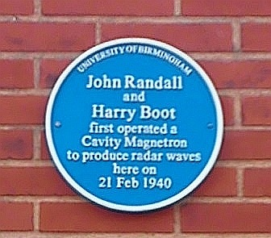
<이과 출신들이 문과 출신의 도움을 받다> 랜들과 부트가 마음을 비우고 읽던 과거 과학 저널들 중에 미국 제네럴 일렉트릭 사의 엔지니어 Albert W. Hull (사진1)이 1916년에 발표한 magnetron이라는 물건에 대한 것이 있었음.
원래 진공관이란 가열된 음극(cathode)에서 튀어나온 전자가 양극(anode)로 날아가는 것. 그 사이에 얇은 전선으로 구성된 그리드(grid)를 두고 그 그리드에 약한 전류 신호를 보내면 음극에서 양극으로 날아가던 전자의 흐름이 그리드의 전류 신호에 영향을 받아 제어되는 것이 진공관의 원리.
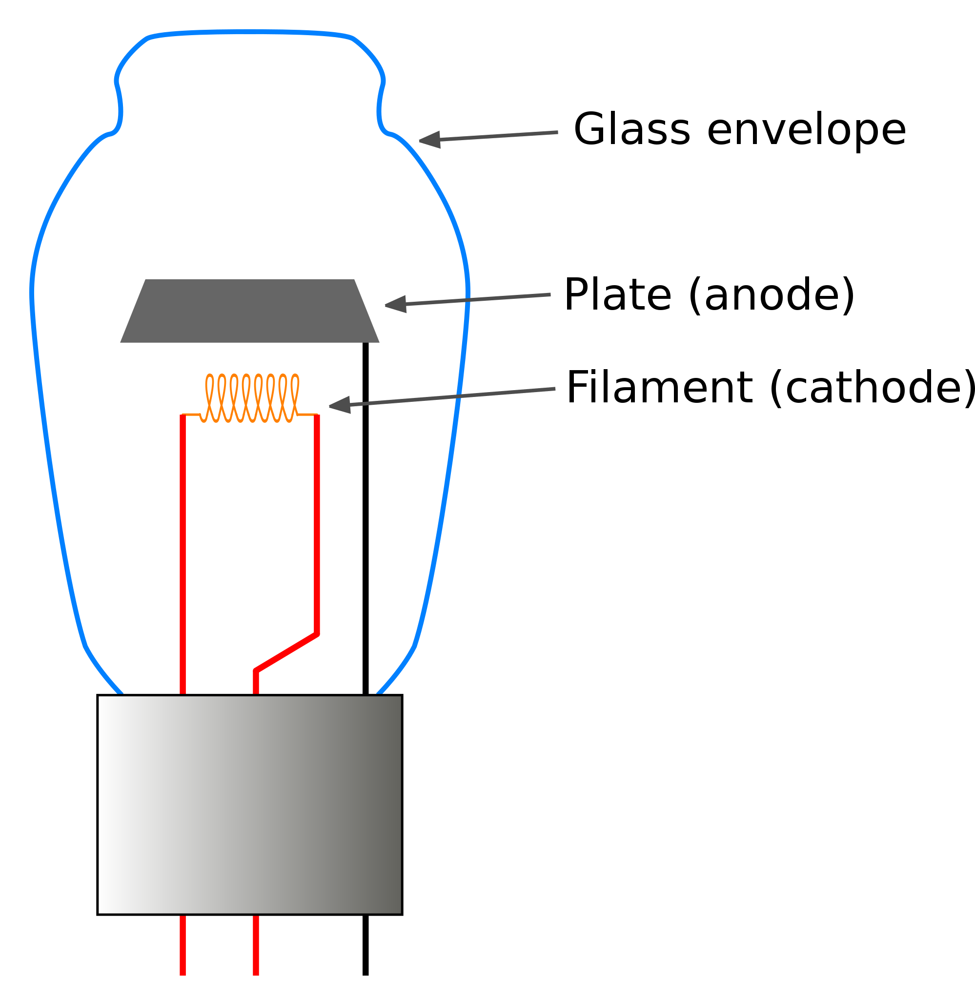
헐은 그리드를 빼고 전류 대신 음극-양극 사이의 전자 흐름을 자기장으로 제어할 생각을 한 것임. 그래서 만든 것이 그리드 대신 회전하는 전자석을 주변에 배치한 마그네트론. 다만 헐의 이 발명품에는 문제가 있었고 헐도 그 논문에 그 문제에 대해 그대로 기술해놓았는데, 어떤 조합의 전압과 자기장 하에서는 이 마그네트론 진공관에 원치 않는 진동이 발생하여 진공관이 깨진다는 것. 그리고 성실한 엔지니어인 헐은 그 진동의 파장이 센티미터 단위더라고 적어 놓음. 정작 헐은 이 장치를 전력 변환기 정도에 쓸 수 있다고 생각했고 통신용 전파 생성에 사용할 생각은 하지 않음. 당연히 센티미터 단위의 파장이 나온다는 말에 눈이 번쩍 뜨인 랜들과 부트는 계속 다른 저널들도 뒤지다 더욱 도움이 되는 것을 찾음. 아래 사진이 알버트 헐. 예일대 출신인 그는 정작 학부 때 전공이 그리스어. 그리스어를 공부하다 그리스 철학자들의 자연과학 관련 일화를 읽고 물리학에 흥미를 느꼈다고. 졸업 이후에도 어학 교사로 일하다가 나중에야 예일대에 되돌아가 물리학 박사학위를 취득. <발명과 발명을 합하는 것도 발명> 랜들과 부트는 이미 비교적 최근이었던 1937년, 미국 스탠포드 대학의 엔지니어들인 Varian 형제들 (Russell과 Sigurd)이 만든 klystron (사진1은 1940년 미국 웨스팅하우스사에서 만든 제품)이라는 물건을 알고 있었음. 진공관을 이용한 증폭기(amplifier)인 클라이스트론에서 랜들과 부트가 주목했던 것은 텅빈 공간인 공동(cavity).
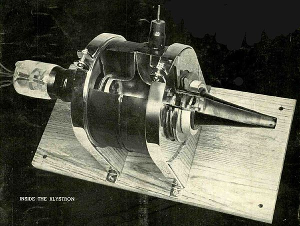
클라이스트론의 작동 원리는 기본적으로 TV 브라운관 같은 electron gun. 다른 진공관처럼 음극에서 양극으로 전자들이 날아가되, 전자가 음극에서 양극 가운데 뚫린 구멍을 통과하여 빔(beam)을 형성하는 것. 이때, 그렇게 나온 전자 빔은 'buncher' cavity와 'catcher' cavity라는, 속이 텅 빈 도우넛 모양의 한쌍의 금속관을 통과하면서 파장을 형성. 즉, bucher cavity에 전류 신호를 입력하면 그 신호에 의해 전자 빔의 흐름 중 일부는 가속되고 일부는 감속되어 몰리고 쏠리며 파동이 만들어지는 것. 이 파동은 catcher cavity에서 전자 빔이 감속되어 전기장으로 바뀌면서 파동으로 전환되어 출력 신호가 됨 (사진2). 이 출력 신호를 다시 입력 신호로 보내면 증폭기로 쓸 수 있음.
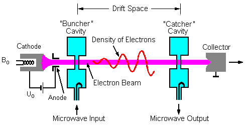
특히 여기서 중요했던 것은 저 cavity의 입구에서 전자 빔에 발생한 파장이 공명(resonate)한다는 것. 이건 호루라기 입구에 입을 대고 불면 호루라기의 빈 공간에서 공명이 일어나 높은 주파수의 소리가 난다는 것과 같은 원리. 바이올린이나 기타의 몸체가 텅 빈 것도 마찬가지. 아래 사진3이 호루라기의 작동원리인데, 의외로 이 호루라기 원리에 대해 전문적인 연구는 아직 많지 않다고. 양자역학보다 더 어려운 것이 유체역학이라는데, 어차피 난 하나도 이해가 안 감.
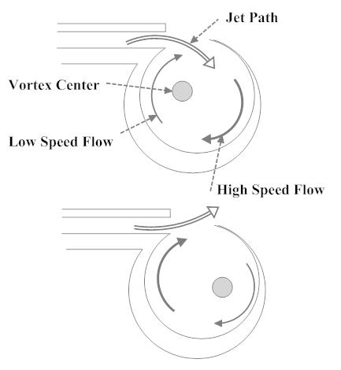
이 기술은 독일도 알고 있었으므로 독일은 이 클라이스트론을 이용하여 레이더 신호를 만듬. 그러나 랜들과 부트는 이 클라이스트론에서 사용한 cavity를 헐이 만든 magnetron과 결합할 생각을 최초로 해냄. <마침내, cavity magnetron> 랜들과 부트는 세계 최초의 cavity magnetron을 만들고 테스트. 이것도 일종의 진공관인데, 다른 진공관과의 차이는 일단 유리가 아니라 통짜 구리 덩어리를 깎아서 만들었고, 실린더 모양의 구리 덩어리에는 실린더 세로 방향으로 8개의 공동(cavity)을 파놓았다는 것. 그리고 가장 중요한 것은 진공 상태의 실린더 가운데에 설치된 음극(cathode)에서 나온 전자들이 곧장 그 주변을 둘러싼 양극(anode) 역할의 구리 덩어리로 곧장 흘러가지 않도록 그 실린더 주변에 강력한 자석들을 배치. 이렇게 강력한 자기장에 놓인 전자들은 자기장에 의해 휘어 실린더 모양의 구리 덩어리 내부를 세로 방향으로 소용돌이치며 흘러 가되 그 cavity들의 입구에서 공명을 일으키며 센티미터 단위의 강력한 파장을 만들어냄. 그 파장 신호는 cavity의 몸체에 연결된 동축선을 통해 출력됨 (사진1).
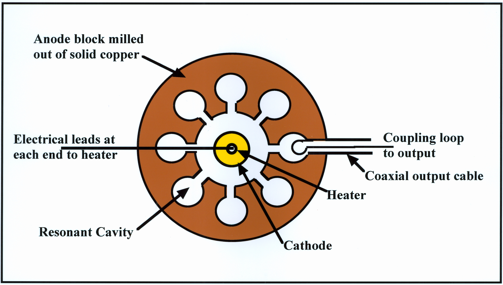
아직 측정 장치가 완비되지 않았던 랜들과 부트는 1940년 2월 최초로 수행된 캐버티 마그네트론 실험에서 그냥 자동차 헤드라이트를 연결시켜놓고 테스트. 결과는 성공. 육안으로는 그냥 헤드라이트가 잘 켜지는 것으로 보였지만 실제로는 엄청난 속도로 켜졌다 꺼졌다를 반복. 랜들과 부트는 점점 더 용량이 큰 헤드라이트를 써가며 어느 정도의 출력을 낼 수 있는지 측정했는데, 결국 대형 트럭의 헤드라이트도 잘 켜는 것을 확인, 나중에 측정해보니 평균 전력은 400 watt이었지만 레이더에서 가장 중요한 pulse 전력은 최대 100 kW까지도 낼 수 있었음. 이로써 영국 공군 레이더 개발팀은 발칵 뒤집어져 며칠 안에 모든 장치를 캐버티 마그네트론을 이용하여 만들기 시작함. 사진2가 캐버티 마그네트론 장치의 부분 단면도. 왼쪽에 튀어나온 굵은 구리선이 센티미터파를 내뿜는 안테나로의 연결선.
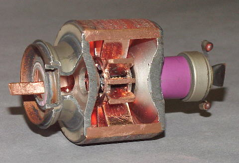
사진3은 소련 항공기에 사용되었던 9GHz 짜리 구형 캐버티 마그네트론. 왼쪽의 두툼하고 넓직한 뭉치가 실린더를 둘러싼 말굽 자석 한쌍. 위에 나온 구멍이 출력선 출구.
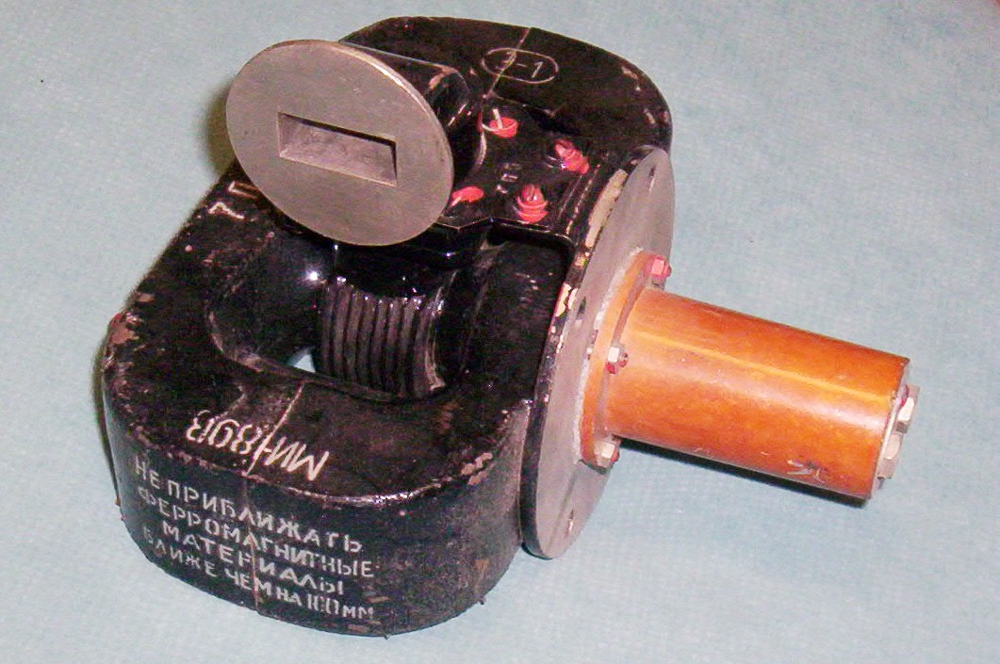
반도체 기반의 레이더를 쓰는 지금도 캐버티 마그네트론은 활발하게 사용됨. 바로 집집마다 사용하는 전자레인지(microwave oven)에는 거의 모조리 캐버티 마그네트론이 들어있음 (그림4).
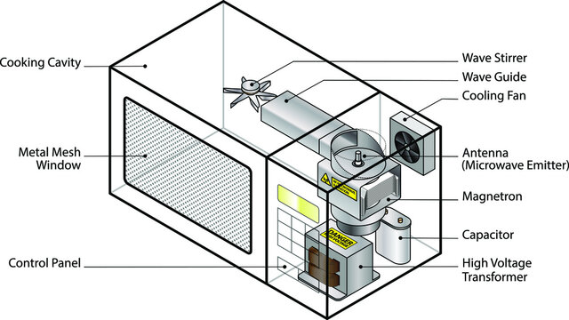